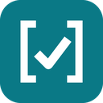

Cek Sitasi untuk Word
Add-in Microsoft Word · APA 7 & IEEE
Periksa sitasi dan daftar pustaka langsung di Word. Setiap masalah muncul sebagai saran yang bisa diterima dengan satu klik, sitasi bisa ditautkan ke daftar pustaka, dan gaya bisa dikonversi antara APA 7 dan IEEE.
Fitur
Mendeteksi masalah sitasi & daftar pustaka secara otomatis, lalu memberi saran perbaikan: teks lama dicoret, teks baru disarankan. Terima, abaikan, atau terima semua.
Setiap sitasi bisa di-Ctrl+klik untuk melompat ke entri daftar pustakanya. Di Word 2016/2019 dibuat sebagai salinan tertaut memakai mesin "Tautkan Sitasi" versi web.
APA 7 ⇄ IEEE dengan pratinjau: sitasi, urutan & nomor referensi, cetak miring, dan indentasi gantung.
Status DOI lewat CrossRef, Cari DOI, status Scopus, dan rentang tahun referensi — setara dengan versi web.
Cara memasang
- Unduh manifest.xml.
- Pasang di Word sesuai perangkat Anda (lihat di bawah).
- Buka naskah, lalu klik tombol Cek Sitasi di tab Beranda.
Word di web (Microsoft 365 / Office.com)
Beranda → Add-in → Add-in Lainnya → Add-in Saya → Unggah Add-in Saya → pilih manifest.xml.
Word Windows
- Buat folder, misalnya
C:\AddinWord, lalu taruhmanifest.xmldi dalamnya. - Bagikan folder itu: klik kanan → Properties → Sharing → Share. Catat alamatnya, misalnya
\\NAMA-PC\AddinWord. - Di Word: File → Opsi → Pusat Kepercayaan → Pengaturan Pusat Kepercayaan → Katalog Add-in Tepercaya. Masukkan alamat folder, klik Tambahkan katalog, centang Tampilkan di Menu, lalu OK.
- Tutup dan buka lagi Word, lalu Sisipkan → Add-in Saya → Folder Bersama → pilih Cek Sitasi.
Word Mac
Salin manifest.xml ke folder ~/Library/Containers/com.microsoft.Word/Data/Documents/wef/ (buat foldernya bila belum ada). Tutup dan buka lagi Word, lalu Sisipkan → Add-in Saya.
Teks naskah diproses di perangkat Anda. Saat cek online aktif, hanya judul, penulis, tahun, dan DOI referensi yang dikirim ke api.crossref.org. Fitur garis bawah langsung di dokumen hanya tersedia di Word dengan langganan Microsoft 365; versi lain memakai panel samping. Mesin pemeriksa berasal dari cek-sitasi.